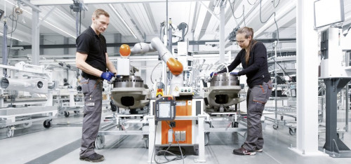
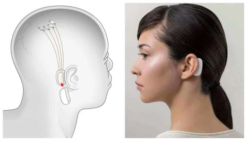

QUEM SOMOS: UMA EMPRESA DE TECNOLOGIA INOVADORA QUE MOSTRA QUE É POSSÍVEL TRANSFORMAR O MUNDO DE FORMA SUSTENTÁVEL.
O QUE FAZEMOS:

PRODUZIMOS DISPOSITIVOS TECNOLÓGICOS
SOFTWARE PRÓPRIO
PRÓTESE BIÔNICA
Brainiac

o CHIP é projetado para se conectar a milhares de neurônios no cérebro. ele registra a atividade desses neurônios,processando esses sinais em tempo real e envia essas informações para a Tecna.
Ou seja, pense no seguinte processo:
Você movimenta a sua mão
Algumas partes do cérebro emitem sinais elétricos com o movimento
Os eletrodos levam esses sinais para o chip
O chip processa os sinais neurais e transmite para a TECNA, que pode interpretar os sinais e executar comandos, como Ligar e desligar um eletrônico.
PROCESSO NA PRATICA:
VISÃO
SER A MAIOR EMPRESA DE TECNOLOGIA BRASILEIRA, SENDO REFERÊNCIA EM SUSTENTABILIDADE E ACESSIBILIDADE ATÉ 2026.
MISSÃO
SER DESTAQUE NO MERCADO TECNOLÓGICO COM FOCO NAS PESSOAS, MOSTRANDO QUE É POSSÍVEL ALINHAR TECNOLOGIA, SUSTENTABILIDADE E ACESSIBILIDADE.